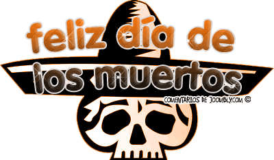
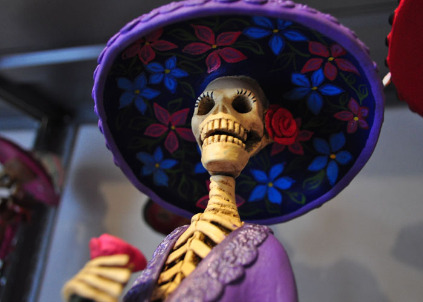

FESTIVIDAD DE DÍA DE MUERTOS
¿Que se celebra?
El día de muertos es considerado la tradición mas representativa de la cultura mexicana.
La celebración se lleva a cabo en dos días:
- El 1ro de noviembre es dedicado al alma de los niños.
- El 2 de noviembre es dedicado al alma de los adultos.
El origen del día de muertos tiene antecedentes relacionados con el mestizaje.Comprende rasgos culturales indígenas y españoles que al mezclarse dieron lugar
a todos los ritos y ceremonias que se realizan alrededor de la festividad.
Una parte importante de ésta tradición implica visitar los cementerios. Ya sea durante el dia o la noche, las familias acuden y colocan velas sobre las
tumbas como una forma de iluminar el camino de las almas en su regreso a casa.
Muchos pernoctan en los panteones que abren las 24 horas durante esas fechas. Otros más contratan grupos musicales que interpretan las canciones
preferidas de los difuntos al pie de su sepulcro.


Cinthya Morales De Jesus
Fechas Principales
Descripciones breves de las fechas más importantes.
El día de muertos no comienza exactamente el 2 de noviembre sino un poco antes. Aqui te mencinaremos algunas de las más destacadas:
- 28 de octubre:
Día de los accidentados.
- 3o de octubre:
Día de los Limbos (día de los niños no bautizados que murieron)
- 31 de octubre y 1ro de noviembre:
Día de las almas de los niños
.
- 2 de Noviembre:
Día de todos los fieles difuntos.
DÍA DE MUERTOS
Ofrenda
Descripción y significado.
La creencia popular es que las almas de los seres queridos que se nos fueron regresan de ultratumba durante el Día de Muertos. Por tal motivo, se les recibe con una ofrenda donde se coloca su comida y bebida favorita, fruta, calaveritas de dulce y, si fuese el caso, juguetes para los niños. No faltan las fotografías de los difuntos y las coloridas flores de cempasúchil.
Encima de tu altar ya preparado vas a colocar los elementos de la ofrenda -- veladoras, incienso, comida, retratos de tus queridos difuntos y otras cosas que le gustaron a éstos en vida.
- Veladoras o cirios:
Se utilizan las velas como símbolo del elemento fuego y por su asociación religiosa. Es común incluír una para cada difunto recordado más otra para un alma "olvidada." A veces las veladoras son colocadas en forma de cruz.
- Imágenes de los difuntos:
La ofrenda se coloca en anticipación a la visita de las almas de nuestros seres queridos ya difuntos, así es que se colocan sobre el altar los retratos de los mismos. Pueden ser fotos sueltas o enmarcadas o inclusive retratos dibujados o pintados
- Flores:
La flor de cempazúchil,de color intenso anaranjado, es la más común en un altar de Muertos. Tanto su belleza como su olor atraen a las almas de los difuntos hacia la ofrenda. Muchas veces las flores se colocan en forma de cruz o formando un "sendero" a seguir por las ánimas.
- Sal:
Se coloca en un recipiente sobre el altar como símbolo de purificación.
- Incienso:
El agradable olor atrae a las almas de los difuntos hacia la ofrenda y también, por su asociación con la religión, es un fuerte símbolo de oración y purificación.
- Papel picado:
Normalmente se pegan varios rectángulos de este papel sobre un hilo para formar una especie de guirnalda para adornar el altar.
- Calaveras:
Las calaveras sirven de recuerdo del destino final de cada ser humano y, a la vez, de la aceptación de la muerte como inevitable y no del todo temible, pues es dulce.
- Pan de muerto:
Casi siempre está presente el pan de muerto en alguna de sus formas.
- Comida y bebida:
Las ánimas que visitan el altar han viajado desde muy lejos y necesitan recobrar fuerzas con una buena comida. En la ofrenda se acostumbra incluír platillos tradicionales mexicanos,No pueden faltar también las frutas de la estación y la calabaza en tacha. Además, se pueden colocar las comidas y dulces que más les gustaron en vida a los ahora difuntos y las bebidas (alcohólicas y no) que disfrutaban. Ah, y si el difunto fumaba, se le provee de algunos cigarrillos para después del festín.
- Artículos religiosos:
Ya que el Día de los Muertos actual es el resultado de la mezcla de tradiciones prehispánicas americanas con las europeas de la época de la Conquista, los elementos católicos figuran en la celebración.
- Objetos varios:
La ofrenda se arma para atraer y agasajar a los difuntos de la familia y es de suponerse que en donde quiera que estén siguen necesitando y disfrutando de las mismas cosas que cuando estuvieron vivos. Por lo mismo, se puede colocar sobre el altar cualquier objeto del gusto del difunto. Juguetes (en el caso de los niños), objetos de aseo personal y artículos que empleaba en su trabajo son algunos ejemplos.
DÍA DE MUERTOS
La Catrina
Descripción de "La Catrina".
Realizada por el pintor, ilustrador y caricaturista mexicano de Aguascalientes, José Guadalupe Posada, y considerada como una de las obras claves y esenciales en el arte mexicano, "La Catrina".
Hemos visto en la moda un muy usado estampado de calaveras, esqueletos, cruces…, pero, ¿cuál es el origen de este símbolo? Lo podríamos situar en los rituales y ofrendas prehispánicas, siendo conocida entonces como el dios Mictecacihuatl (dama de la muerte). Actualmente es conocida en México como la Catrina creada por el caricaturista José Guadalupe Posada y bautizada como “Catrina” por Diego Rivera. La primera vez que se la representó completamente vestida acompañada de José Guadalupe Posada, fue en el mural de Diego Rivera “Una tarde dominical en la Alameda Central”.
“La Catrina” es un grabado realizado por el oriundo de Aguascalientes bajo el nombre original de “La Calavera Garbancera”, esta última palabra era utilizada para llamar a las personas que vendían garbanza y que aún teniendo sangre indígena pretendían hacerse europeos, renegando de su raza.
Originalmente, la calavera no está vestida, únicamente utiliza un sombrero, lo que se ha interpretado como una crítica a la pobreza en que vivían los mexicanos.
Fue el muralista Diego Rivera quien hizo uso de ella y le agregó el vestuario en su mural “Sueño de una tarde dominical en la Alameda Central”, también fue él quien la bautizó como “Catrina”, nombre con el que se popularizaría.
DÍA DE MUERTOS
Janitzio
Descripción de día de muertos en Janitzio.
La cultura de un pueblo está basada en sus costumbres y tradiciones, la tradición del día de muertos representa una actitud específicamente mexicana ante la muerte, este día 2 de Noviembre "Día de los Difuntos", es un día consagrado a los muertos queridos.
En la ceremonia de la ofrenda a los difuntos, en el cementerio de la isla de Janitzio en el lago de Pátzcuaro, del estado de Michoacán, México , la tradición del "Día de Muertos" se ha conservado en todo su vigor.
A las 6 de la tarde del día 1° de Noviembre, de cada año, comienza a oírse el toque de muertos, y con intervalos de medio minuto la campana sigue doblando hasta la madrugada.
Poco antes de la media noche las familias de la isla sales de sus casas rumbo al cementerio de la cercana ciudad de Pátzcuaro las personas se dirigen a la isla en sus canoas que semejan mariposas y que a la luz de miles de velas se antoja como un cuento. Los hombres embozados en sus sarapes, la mujeres ataviadas con sus mejores ropas y joyas más vistosas.
Para iluminar el camino cada grupo prende velas, la isla adquiere un aspecto fantástico, como millares de lucecitas, masas de sombras caminantes y el lento e interminable doblar de las campanas.
Los grupos se dirigen a las tumbas de sus familiares, las adornan con guirnaldas de flores, colocan ahí las bateas (charolas de madera) y los platones cargados de comida y frutas y prenden todas las velas que les sea posible.
A la media noche las mujeres se arrodillan ante las tumbas, los hombre entonan fúnebres alabanzas a los muertos, de cuando en cuando las mujeres desfloran flores de cempazúchitl llevadas especialmente para ese objeto y riegan los pétalos sobre las tumbas. Así transcurren las horas hasta el amanecer.
Junto al cementerio, en el atrio de la parroquia se celebra una ceremonia, en ese lugar se reúnen las familias que no tienen muertos o cuyos deudos tienen más de tres años de enterrados.
No llevan ramos ni flores, solamente velas y sus bateas con ofrendas, así permanecen mudos a lo largo de toda la noche.
Esta costumbre tiene su concepción desde la época prehispánica según la cual el muerto tenía que hacer un largo viaje que duraría tres años para llegar a Mictlán, lugar donde se establecería para siempre, por ese motivo consideran que al llegar el difunto al final de su viaje, ya no necesita que lo velen en el camposanto y solamente rezan por ellos en la iglesia.
DÍA DE MUERTOS
Huaquechula
Descripción de día de muertos en Huaquechula.
En Huaquechula la celebración de día de muertos de este año, comenzó desde el 28 de octubre, aunque tradicionalmente sus altares monumentales no se abran al público hasta el 31 de octubre. Este pueblo tiene la costumbre de poner ofrendas diferentes a las que estamos acostumbrados y cada año se le ponen a las personas que fallecieron durante todo el año, en Huaquechula en noviembre del 2011 se instalaron 23 altares monumentales. Las animas, como ahí se les llama llegan hasta las dos de la tarde que es el momento cuando al familia abre sus altares para que se puedan visitar, cabe la aclaración que el ir a Huaquechula a ver las ofrendas no significa ir a comer mole gratis.
A partir de las investigaciones de Lucero Morales, Néstor Martínez y José Ávila, podemos conocer que en Huauqechula existen tres tipos de altares: nuevo, viejo y de la “anima sola”. Este tipo de altares están considerados monumentales por su estructura ya que miden unos 3 metros de altura como otros tres metros de largo. Cada altar debe tener tres pisos: el primero representa la vida en la tierra y por lo tanto ahí se pone la comida u objetos que le gustaban al difunto, el segundo piso es la unión de lo terrenal con lo divino, y el tercer nivel ya habla solo de lo divino en donde se coloca alguna imagen religiosa.
Todos los altares deben ser de satín blanco o plástico blanco y cuentan con pequeñas esculturas de ángeles. Otro atractivo es que en el primer nivel se coloca la imagen del difunto mirando hacia un espejo lo que cual permite dar profundidad al diseño del altar.
DÍA DE MUERTOS
Mi opinión del dia de Muertos
Conclusión.
En mi opinión, es la única celebración que da, verdadera identidad nacional a este país.
Asi como cada ciudad, población o municipio tiene su manera de celebrar esta tradición,
hay lugares en los que lo hacen notar mucho y le dan la importancia que se merece,
o tambien la hacen su mayor tradición y la mas importante de otras.
DÍA DE MUERTOS